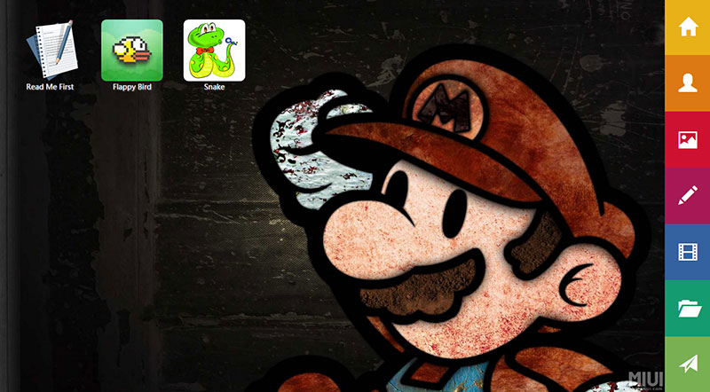

做一个略调皮的个人主页--游戏篇

最近严重加班，非常严重···
万恶的discuz啊，还有万恶的环境问题，死了算了。
这个应该是这个系列最后一篇啦，之后我会做另一个想法。主要是用来查看文章的一个主页，期间发些自己觉得好玩的东西出来。
这一篇主要介绍一下我做的一个flappy bird。由于是自己js手写的，效率肯定不高，就当拿来玩的罢。浏览器不好回很卡哦。
效果演示在这里：
首先闭一个包，在里面写个向外接口：
$.fn.buildFlappyBird = function (settings) {
new flappyBird(settings);
}
var flappyBird = function (settings) {
this.start();
}
然后分步骤去实现这个东西。
第一步，是解决自由落体，这个我们借用一下google在某年牛顿诞辰在主页上放的一个苹果自由落体的源码。去掉水平移动，
var v = -10,i = $.noop;
function aa(speed) {
v= speed || - 9;
i = setInterval(function () {bb();}, 25);
}
function bb() {
var $bird= $('#flappy_bird');
var top = $bird.offset().top , b = top + v;
$bird.css( {'top' : b + 'px'} );
if (top < 460) {
v += 0.9;
} else {
v = 0;
$bird.css( {'top' : '460px'} );
flappyBird.prototype.endGame();
}
}
把这个过程附在键盘事件上就ok了。像这样：
flappyBird.prototype.keyUp = function () {
if(!this.getSettings().ifStart){
this.getSettings().ifStart = true;
this.setState(true);
this.movePipe();
this.getWelcome().fadeOut();
}
if(!this.getState())return;
clearInterval(i);
aa();
}
然后是柱子的移动和增加，移动整个是ul标签的移动，这个移动的时候会随着距离增加柱子，整个过程差不多就是这样。
首先是移动柱子：
flappyBird.prototype.movePipe = function () {
var _this = this,leftFlag = 99999;
this.getSettings().moveEvent = setInterval(function () {
var $pipeBox = _this.getPipe(),state = _this.getState(),left = Number($pipeBox.css('left').replace('px', '')) - 5,$pipeCurrent = $('.flappy_pipe[data-left="'+ (0 - left) +'"]');
if(state){
$pipeBox.css({left : left + 'px'});
if(left < -200 && left%200 == 0) _this.addPipe(left); //add管子
if((left + 120) < -400 && (left + 120)%200 == 0) _this.setIndex(_this.getIndex() + 1); //计数器event
if($pipeCurrent.length > 0) leftFlag = 0 - left; //判断管子是否经过bird
if(0 - left > leftFlag && 0 - left < leftFlag + 87) _this.checkCollision(leftFlag); //经过event
}
},25);
}
当条件满足的时候，就增加柱子，增加柱子就是写进去一些html代码即可：
flappyBird.prototype.addPipe = function (left) {
var height = parseInt(Math.random()*320) + 40,$pipeBox = this.getPipe();
var html = '<div class="flappy_pipe" data-left="'+ (250 - left) +'" data-height="'+ height +'" style="height:'+ height +'px;left:' + (0 - left + 400) + 'px;"></div>';
$pipeBox.append(html);
}
之后是最后一步，验证碰撞，这个就是获取小鸟的top坐标，加上他本身的体积与柱子比较的过程。
flappyBird.prototype.checkCollision = function (leftFlag) {
var $pipe = $('.flappy_pipe[data-left="'+ (leftFlag) +'"]'),height = Number($pipe.attr('data-height')),$bird = this.getBird(),birdTop = $bird.offset().top;
if(birdTop < height || birdTop > height + 80) this.endGame();
}
这样其实大体的功能就实现了，之后就是增加个endgame呀，resetgame呀方法，让它可以重复玩，就ok啦。
主要的思路就是拆分拆分再拆分，写出n个方法来在组装成一个，这样既可以复用，思路也会很明确。
可能效率不是很好，毕竟自己只是想实现效果，好吧，本来对小效率这东西，研究的就不多，希望以后能够不断充实。哈哈。